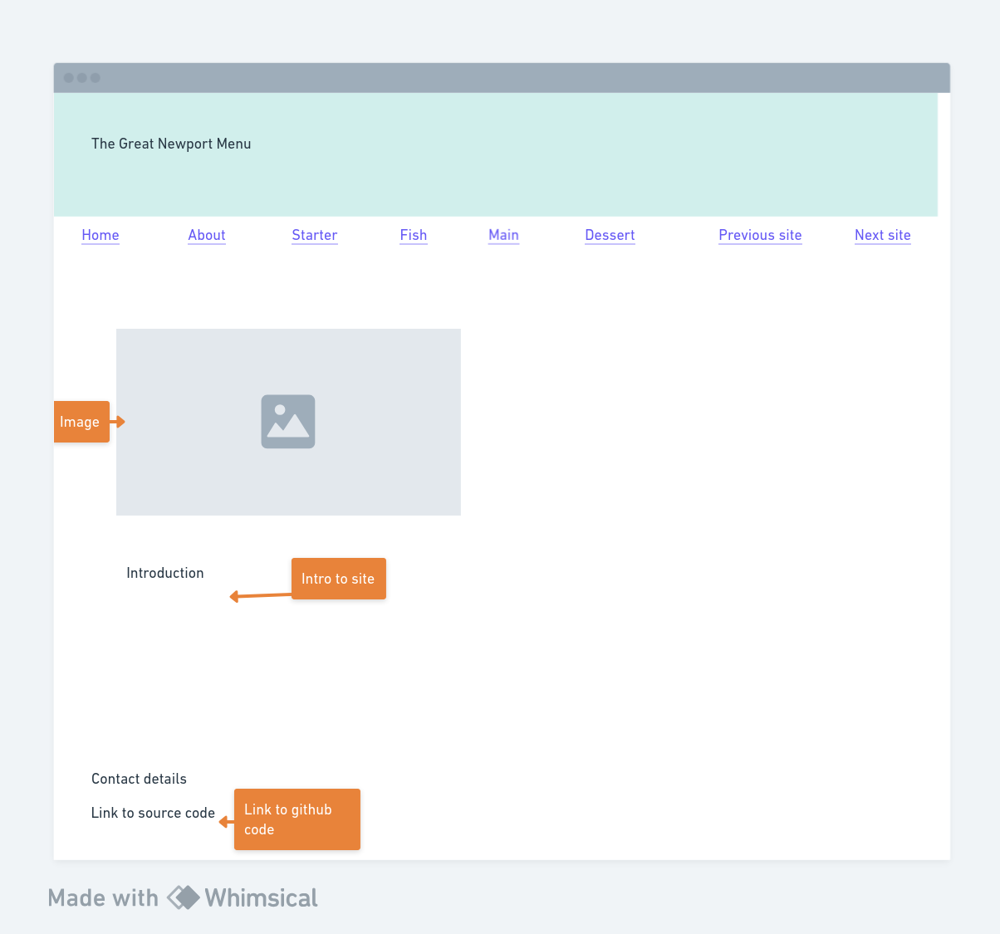
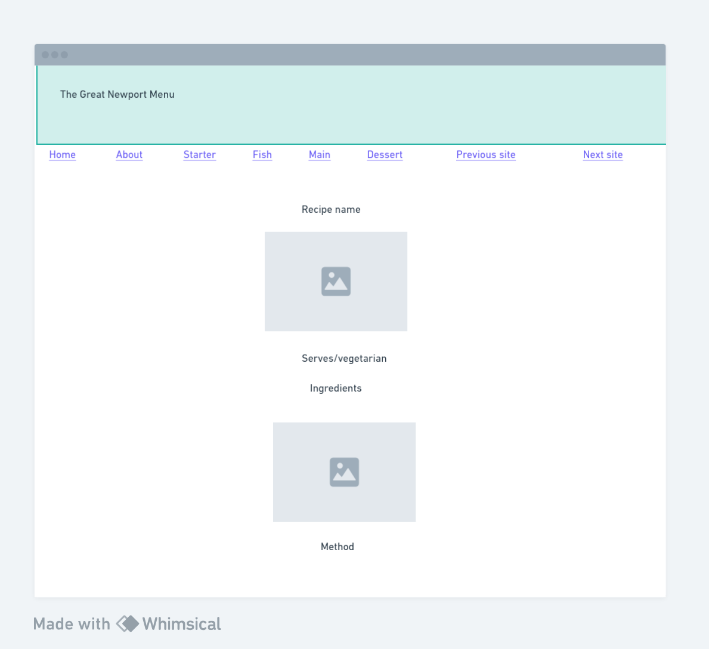

Firstly, we came together to discuss the brief and ensure that we understood the requirements.
In our pair, we took some time to brainstorm the ideas the we had for the layout of the site, and our recipe ideas.
Using a tool called Whimsical, we began to create a wireframe, enabling us to design the layout of the site together and come up with a design that we could use as a reference to build our pages.
To use Whimsical, you can click here.
Here are the wireframes that we created to begin desiging The Great Newport Menu:


Together, we decided to create a four course menu, and divided this into parts for each of us to work on, with Ross working on the starter and fish course, and Lauren working on the main course and dessert.
Once we had designed the first draft of our pages, we met back up to go through these, ensuring that what we had designed so far was aligned and that this had successfully deployed.
We then divided the Home page (Ross) and the About page (Lauren) and continued to work on these, before again meeting up and checking that these were aligned.